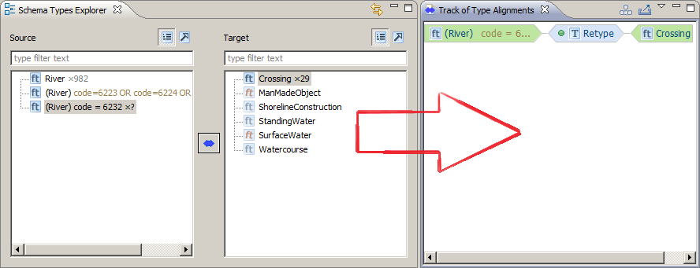
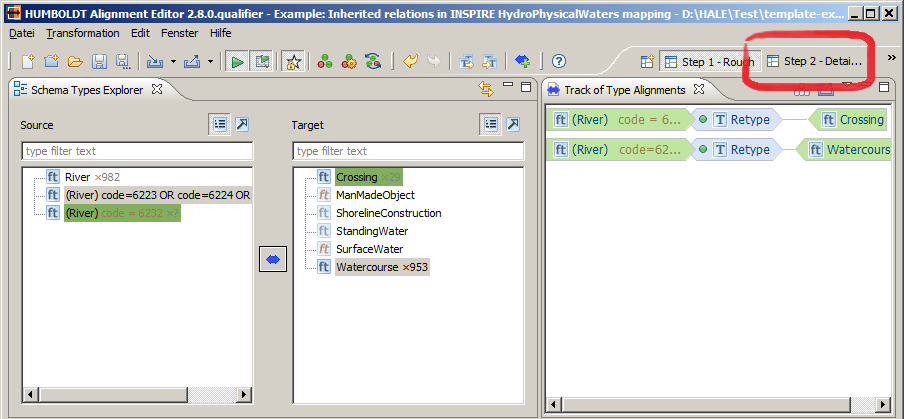
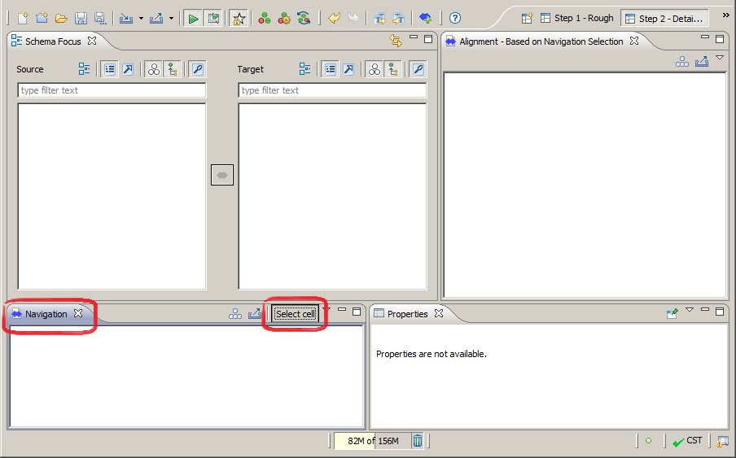
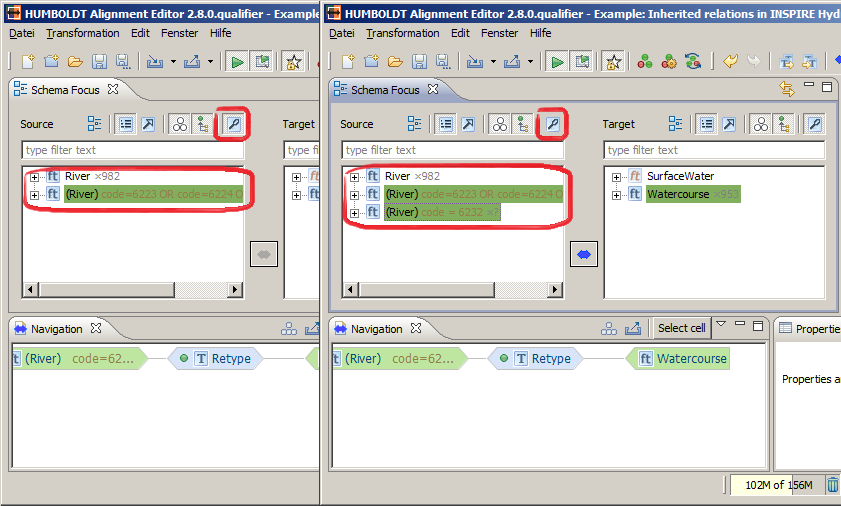
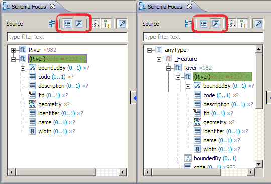

If your workbench looks different, try to open the
Perspectives 'Step 1 - Rough' and 'Step 2 - Detailed'.
Click for Help 'Configuring your workbench'.
If your workbench looks different, try to open the
Perspectives 'Step 1 - Rough' and 'Step 2 - Detailed'.
Click for Help 'Configuring your workbench'.
You should setup a new Project first. (see First steps in HALE in case you don't know how to setup a new Project.) There are some example projects you can use: Overview of Example Projects
After the setup of a new Project your Workspace is clean.
If you load an existing project or an example,
there could be some existing alignments.
Either way your workbench should look similar to this,
if the 'Rough' Perspective is shown:
If your workbench looks different, try to open the
Perspectives 'Step 1 - Rough' and 'Step 2 - Detailed'.
Click for Help 'Configuring your workbench'.
This perspective is used to create Type alignments.
If you create a new Type Alignment, the result is shown in View 'Track of Type Alignments'. For the example it looks like this: 
If you have done creating all type alignment, change the Perspective by clicking on 'Step 2 - Detailed'. 
This perspective is used to refine your mapping. You can choose one type relation by clicking on 'Select cell' button of the 'Navigation' View (lower left corner).  (The result of the prior perspective)
The 'Select Cell' Button opens a dialog where you
can choose a type alignment:

If the cell was chosen, the perspective will react and only show mappable types with context to the selected type cell. You can deactivate this behavior in case you want to analyze another type. The view reacts as a normal Schema Explorer then. However the 'Alignment - based on Navigation Selection' stays focused on the selected Type cell. 
Like the normal 'Schema Explorer' you can display the hierarchy of the source or target Schema. Below is an example of the example Source Schema Hierarchy. 
The 'Detailed' perspective is used to map properties for every type. Here is an example of how to work with this Perspective. The example shows the mapping of the property 'description' of the '(River)code=...' and 'Crossing' Type by using inheritance. This means, that every 'River' description is aligned to the 'Abstract Feature' description.